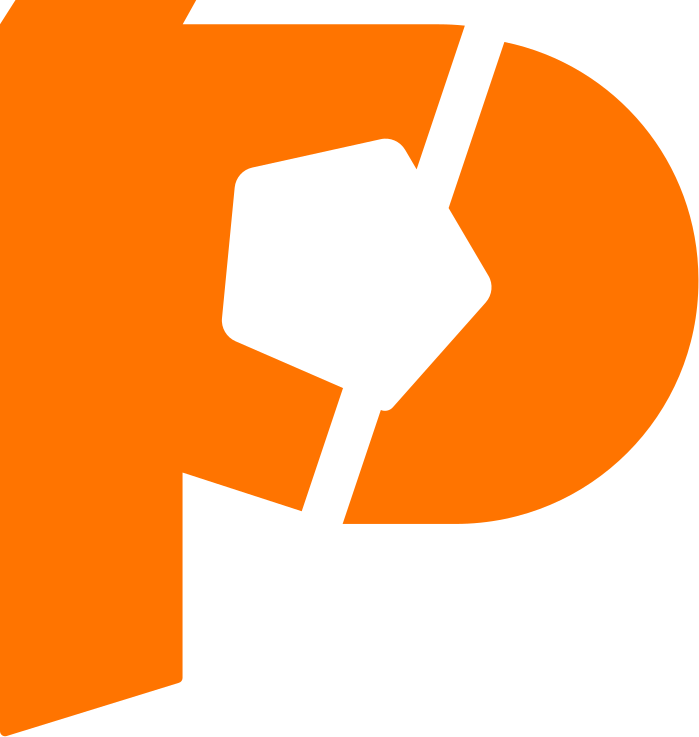

FinePlay
— 축구 분석 플랫폼 · 풀스택 전담 (위 경력의 핵심 제품)2023.11 — 현재
Spring Boot · AWS · Redis · MySQL · Flutter · 토스페이먼츠 · SSE ·
www.fineplay.kr
- 경기 영상 업로드 → 하이라이트·분석·리포트 플로우, 멤버십 결제·실시간 알림까지 백엔드·인프라 0→1 설계·운영
- Flutter 단일 코드베이스로 iOS·Android·Web 동시 출시(21+ 기능 도메인), SUFA·CAMP-US 등 실제 리그 운영에 적용
FinePlay CardNews — B2B 경기분석 카드뉴스 에디터 · 프런트 전담
2026.04 — 현재
React · Canvas · XLSX · html-to-image · WASM · JSZip
- 엑셀 분석 파싱 → 좌표 정규화 → 포지션별 통계 자동 선별 → Canvas 히트맵·패스맵 렌더링, WASM 배경제거·PNG 일괄 export
iCatch — 객체인식 기반 홈캠 · AIoT
2025.03 — 2025.06
YOLOv8 · MediaPipe · Python · React · Spring Boot
- 탐지 → 상태 판단 → 알림 흐름을 설계 — YOLO + MediaPipe로 위치·거리·시간 조건 기반 상태 판별, 라즈베리파이 환경 경량화
StyleRobo — AI 퍼스널컬러 진단 웹 · 팀장
2024.09 — 2024.12
Python · scikit-learn · OpenCV · LLM · React · Spring Boot
- OpenCV 채도·명도 특징 추출 + KNN 분류로 4계절 퍼스널컬러 진단 — 단순 RGB 분석 대비 정확도 90% 이상
- 진단 태그 → LLM 문구 생성 → 이미지 생성 파이프라인 구성, Spring Boot 결과 저장 API·React 시각화
“50% 덜 고민하고, 10% 더 실행한다 (50210)” — 완벽한 계획보다 가설을 세워 프로토타입으로 검증하고 빠르게 개선합니다.
- 그럴듯한 숫자가 아니라 인과가 보이는 실측으로 판단합니다 — 성능은 측정해서 깎고, 장애는 근본 원인까지 파고듭니다.
- AI 에이전트(Claude Code)를 구현·리뷰·점검 세션으로 나눠 병행하되, 스펙·검증·최종 판단은 직접 합니다.
BackendSpring Boot · Java · REST API · JWT · MySQL · Redis · SSE · S3
Infra / DevOpsAWS (EC2·ALB·RDS·ElastiCache) · GitHub Actions CI/CD · Blue-Green · Docker
Frontend / MobileFlutter (Riverpod·go_router) · React · styled-components · Canvas · Recharts
AI / LLMClaude Code 멀티세션 워크플로우 · OpenAI GPT (FirstAid) · LLM 콘텐츠 파이프라인 (StyleRobo) · YOLOv8 · MediaPipe · OpenCV
가천대학교 컴퓨터공학과 — 학사 · GPA 3.84 / 4.5
2020.03 — 2026.02
T.M.I 우수상 — 가천대 ArTechne센터 · 그룹 가계부‘CashTag’
2024.07
학습공동체 우수상 — 고급웹프로그래밍 · 가천대학교
2023.12